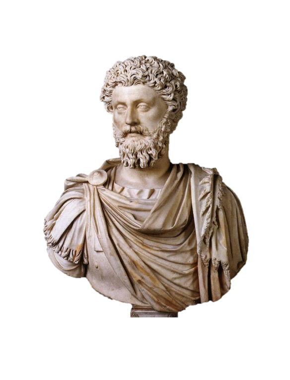
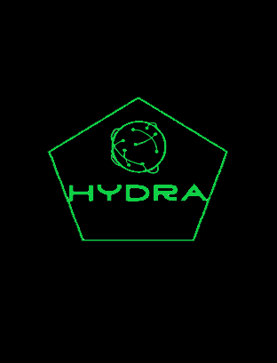
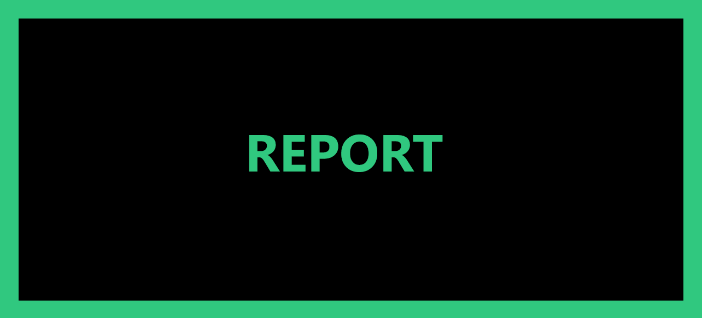

Creative and dedicated tech enthusiast
My name is Vasco da Costa Bettencourt, a portuguese junior developer and a
current intern in the NTT Data Corporation with roughly 2 to 3 years worth of
knowledge and experience in programming mainly with python, html, CSS,
javascript and SQL. Most of these traits were gained during the 3 years i spent
getting my bachelors in the Universidade Autónoma de Lisboa.
After the completion of that goal, I began applying at different IT companies
and offices, whilst creating presentable and organized personal documentations,
such as curriculums, projects, a linkedin page and even this portfolio.
This process resumed until i was hired November 2023.
For the last 3 and half years, I´ve dedicated myself to the pursuit of improved
mental skills and the acquirement of knowledge in the many different
fields of the IT world. Most of this search was obtained in my
university where i met equally minded individuals and was able to
establish long-term relationships with wonderful and talented students,
learning many things with them not only about programming but also
about life itself. I studied under many different kinds of professors
with their own distinguished methods of teaching, allowing me to experience
and learn multiple ways of viewing a problem.
As for me, i enjoy reading, mainly philosophy and history themed books, exercising,
learning new languages, playing indie style games, completely failing to
improve whatsoever at chess and enjoying a beer with some friends.

"Be tolerant with others and strict with yourself."
- Marcus Aurelius
Certificates and completed courses

Projects and Designs
Some samples of differents works and creations I´ve done over the years

Case-study | Degree in Computer Science - Final Project
Hydra - Blockchains and computer power:
The use-case of this project resolved around the investigation of the possibility to create
large-sized networks capable of carrying out very demanding tasks via collaboration of
different users and their respective machines, alongside the usage of a blockchain
implementation as a rewarding method.

Other minor designs and ideas
Game Project - Menu Concept
Unity 2021.3.17f1
Game Project - Playable Map
Unity 2021.2.10f1
Simple Model
Blender
Description goes here.